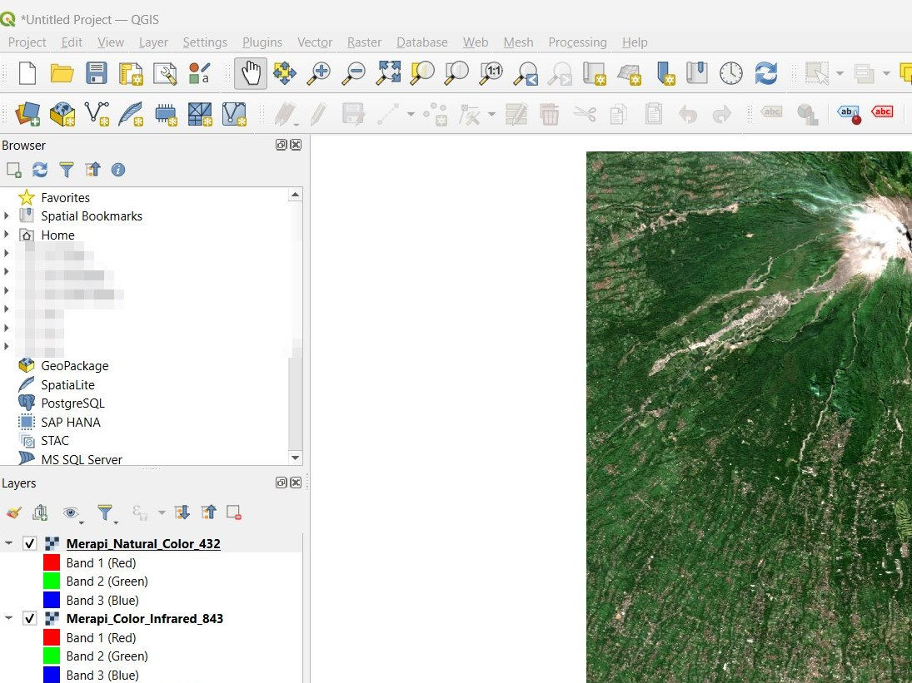
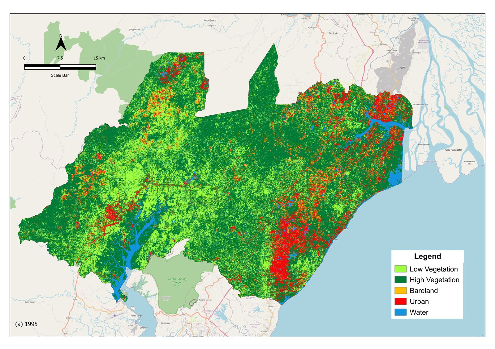
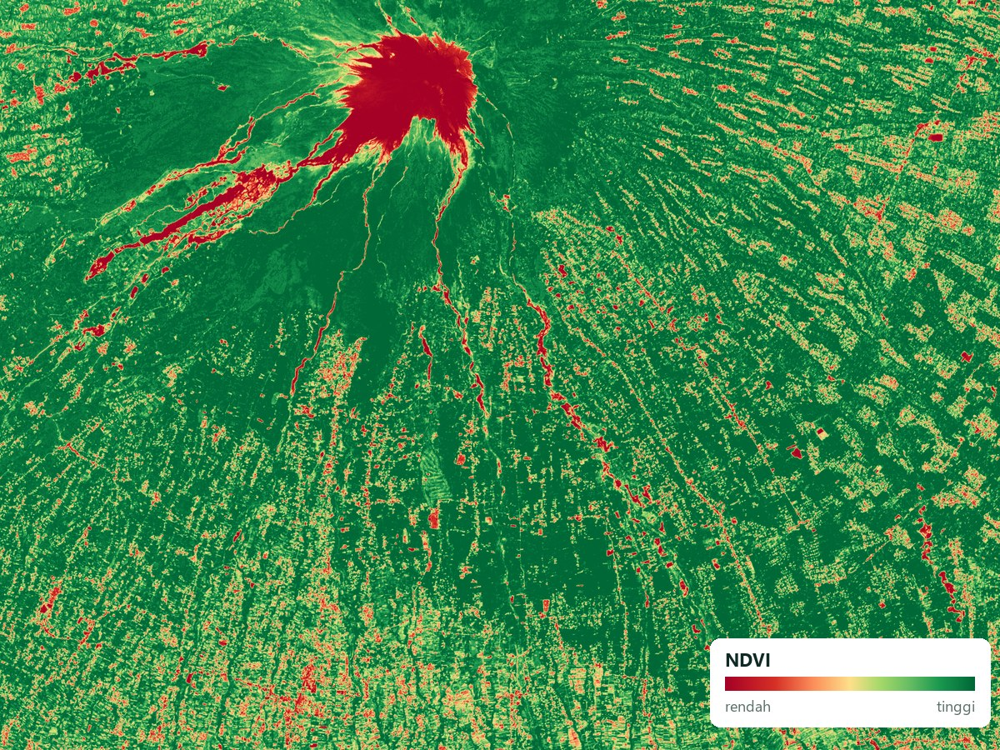
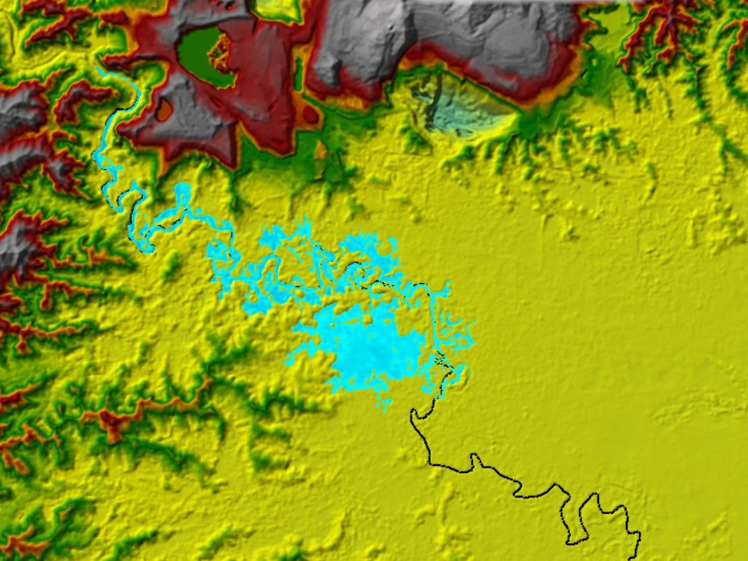
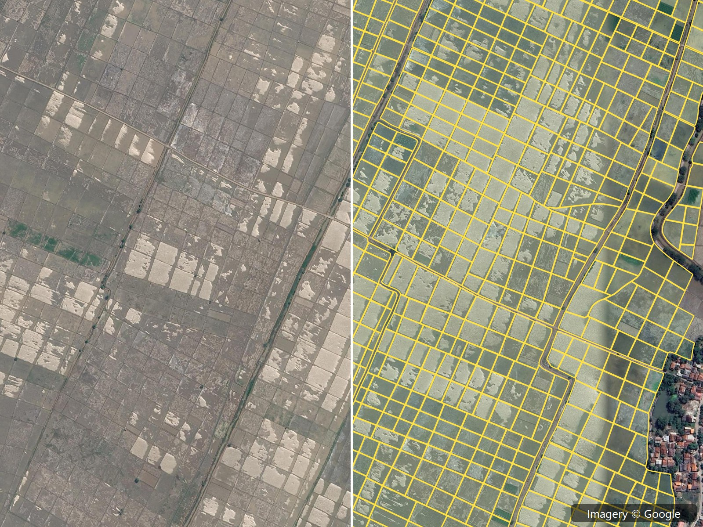
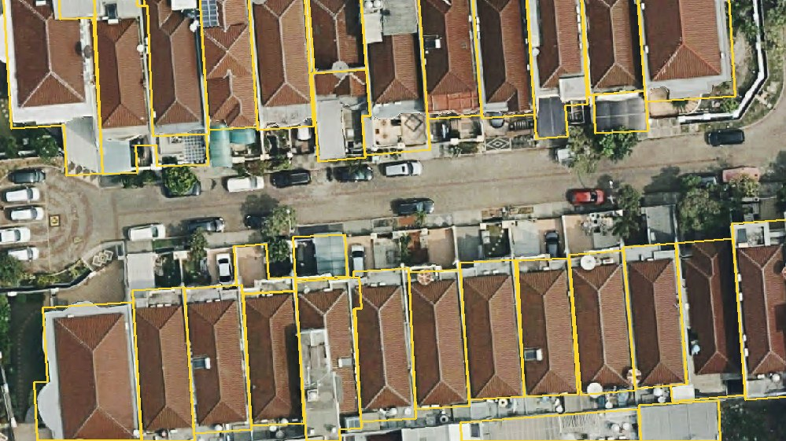

01Dasar
Peta lokasi penelitian
Peta lokasi untuk tugas akhir, lengkap dengan kelas ketinggian, batas desa, dan inset.
DEMNASSkala 1:40.000
02Dasar
Denah administrasi desa
Batas desa dan dusun, jaringan jalan, sungai, dan fasilitas umum di atas citra Sentinel-2.
Batas dusunSkala 1:17.000
03Menengah
Digitasi bangunan dan bidang tanah
Lebih dari 6.900 footprint bangunan didigitasi dari citra resolusi tinggi, lengkap dengan cek topologi.
6.900+ bangunanBidang tanahCek topologi

Copernicus Sentinel data 202404Menengah
Kelas privat QGIS untuk tim perencana
Pelatihan dari dasar sampai layout peta, langsung praktik memakai data milik peserta.
QGISPraktik data sendiri

Basemap © OpenStreetMap contributors05Menengah
Klasifikasi tutupan lahan dengan Random Forest
Lima kelas tutupan lahan dari citra multi-tahun, dilengkapi uji akurasi.
Random ForestUji akurasi

Copernicus Sentinel data 202406Lanjut
Pemantauan vegetasi di Google Earth Engine
Peta NDVI dari Sentinel-2 di Google Earth Engine untuk memantau kerapatan dan perubahan vegetasi.
GEENDVISentinel-2

Kedalaman genangan · RAS Mapper07Lanjut
Pemodelan genangan banjir 2D HEC-RAS
Simulasi aliran 2D di RAS Mapper untuk memetakan sebaran dan kedalaman genangan banjir.
HEC-RAS 2DDTM

kiri: citra · kanan: batas petak08Lanjut
Delineasi petak sawah dengan AI
Model AI menarik 1.619 batas petak sawah dari ortofoto 2,5 m, lengkap dengan luas tiap petak.
Deep learning1.619 petak

Garis kuning: batas atap hasil SAM09Lanjut
Segmentasi bangunan otomatis
Segment Anything (SAM) menarik batas atap otomatis dari citra 10 cm, dengan IoU 0,87 terhadap digitasi manual.
SAMCitra 10 cmIoU 0,87
10Lanjut
WebGIS digital twin 3D
Dasbor peta interaktif untuk memantau portofolio aset, risiko bencana, dan simulasi skenario dalam tampilan 2D dan 3D.
3DMapLibreDasbor